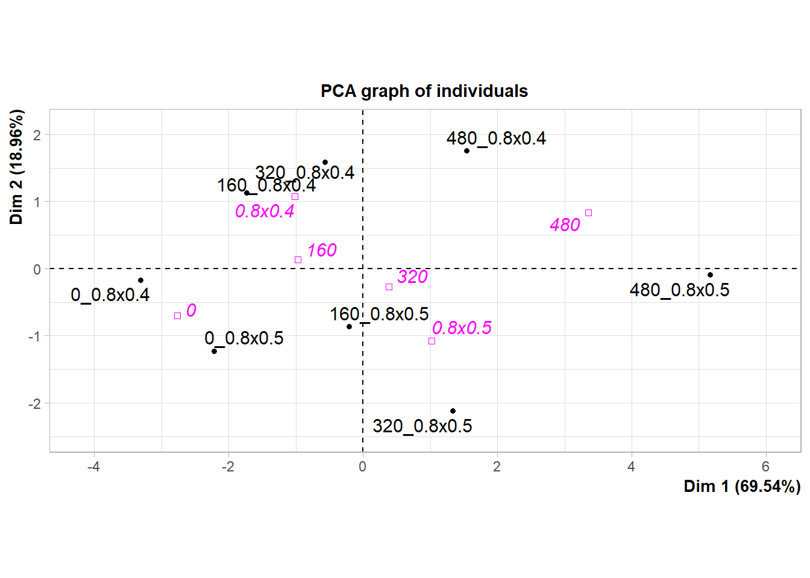
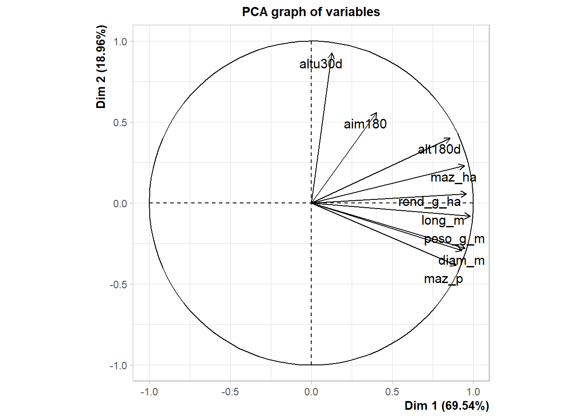
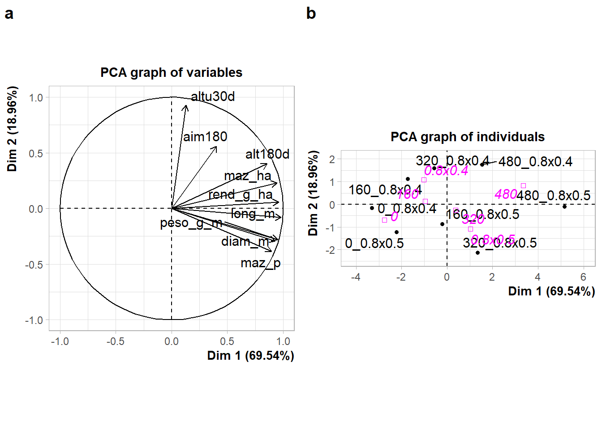

Code
library(tidyverse)
library(googlesheets4)
library(emmeans)
library(lme4)
library(FactoMineR)
library(car)
library(multcomp)
library(cowplot)
Análisis estadístico del abono de PORCINAZA Y DENSIDADES OBTIMAS DE SIEMBRA SOBRE EL RENDIMIENTO DE MAÍZ MORADO (Zea mays L.) var. INIA-601.
El presente trabajo tiene como finalidad analizar estadísticamente los datos experimentales provenientes del estudio “Niveles de porcinaza y densidades de siembra sobre el rendimiento de maíz morado (Zea mays L.) var. INIA-601 en Lámud”, con el propósito de contrastar los resultados originales de la tesis con los obtenidos mediante el procesamiento en R Studio. El maíz morado es un cultivo de relevancia económica y nutricional en el Perú. Sin embargo, su rendimiento depende de factores agronómicos como la densidad de siembra y el manejo de la fertilización orgánica. En este contexto, la porcinaza constituye una alternativa sostenible que puede mejorar la productividad y la salud del suelo.
A través de herramientas estadísticas y gráficas en R Studio, se busca reproducir el análisis de varianza (ANOVA), la comparación de medias y la visualización de los resultados, verificando la consistencia con los hallazgos reportados en la investigación original.

Analizar y comparar los resultados obtenidos en la tesis con los generados mediante el procesamiento estadístico en R Studio, evaluando los efectos de los niveles de porcinaza y las densidades de siembra sobre el rendimiento del maíz morado.
1.Organizar los datos experimentales en una base de datos estructurada en formato CSV o Google Sheets.
2.Importar y verificar correctamente los factores experimentales en R Studio (porcinaza, densidad y bloque).
3.Realizar el análisis de varianza (ANOVA) para cada variable evaluada.
4.Efectuar la comparación de medias mediante la prueba de Tukey.
5.Representar los resultados de manera gráfica para visualizar las diferencias entre tratamientos.
6.Contrastar los resultados obtenidos con los reportados en la tesis original.
Los datos experimentales fueron recolectados del anexo de la tesis y organizados en un archivo CSV denominado DBCA_maiz_morado.csv, que contiene los factores y variables evaluadas:
Factores: Nivel de porcinaza (0, 160, 320 y 480 g/planta) y Densidad de siembra (0.8×0.4 m y 0.8×0.5 m).
Bloques: 4 repeticiones.
Variables: Altura de planta, número de mazorcas por planta, longitud, diámetro y peso de mazorca, altura de inserción, número de mazorcas por hectárea y rendimiento de grano por hectárea.
library(tidyverse)
library(googlesheets4)
library(emmeans)
library(lme4)
library(FactoMineR)
library(car)
library(multcomp)
library(cowplot)https://docs.google.com/spreadsheets/d/1o4mtAkI1lBgoUzqDT-e7cIhIwh_K5m6CoxAx0ETvwXU/edit?gid=1955940309#gid=1955940309
url <- "https://docs.google.com/spreadsheets/d/1o4mtAkI1lBgoUzqDT-e7cIhIwh_K5m6CoxAx0ETvwXU/edit?gid=1753270824#gid=1753270824"
gs <- url %>%
as_sheets_id()
fb <- gs %>%
range_read("fb") %>%
mutate(across(1:bloque, ~as.factor(.)))
str(fb)tibble [32 × 13] (S3: tbl_df/tbl/data.frame)
$ tratamientos: Factor w/ 8 levels "T1","T2","T3",..: 1 2 3 4 5 6 7 8 1 2 ...
$ densidad : Factor w/ 2 levels "0.8x0.4","0.8x0.5": 1 1 1 1 2 2 2 2 1 1 ...
$ porcinaza : Factor w/ 4 levels "0","160","320",..: 1 2 3 4 1 2 3 4 1 2 ...
$ bloque : Factor w/ 4 levels "I","II","III",..: 1 1 1 1 1 1 1 1 2 2 ...
$ altu30d : num [1:32] 23.1 20 23.4 26.2 20.7 24.5 23.1 23 23.5 25.7 ...
$ alt180d : num [1:32] 193 196 199 202 189 ...
$ maz_p : num [1:32] 1.1 1.1 1.1 1.4 1.3 1.4 1.5 1.8 1 1.1 ...
$ long_m : num [1:32] 12.3 14 14.4 16.1 13 16.3 16.8 21.4 12.2 13.9 ...
$ diam_m : num [1:32] 4.5 4.4 4.8 5 4.9 5.2 5.4 6 4.4 4.7 ...
$ peso_g_m : num [1:32] 89.6 100.6 109.4 132.8 112.8 ...
$ aim180 : num [1:32] 82 81.4 79.7 93.2 99 ...
$ maz_ha : num [1:32] 35156 35156 35156 42969 31250 ...
$ rend_g_ha : num [1:32] 2801 3145 3418 4148 2819 ...\[ Rendiminto_g_ha = \mu + bloque + porcinaza +densidad + porcinaza*densidad + e\]
md <- lmer(rend_g_ha ~ bloque + porcinaza + densidad + porcinaza*densidad + (1|bloque), data = fb)
anova(md)Analysis of Variance Table
npar Sum Sq Mean Sq F value
bloque 3 71952 23984 1.0612
porcinaza 3 16925346 5641782 249.6333
densidad 1 1223048 1223048 54.1165
porcinaza:densidad 3 1755063 585021 25.8856library(car)Anova(md)Analysis of Deviance Table (Type II Wald chisquare tests)
Response: rend_g_ha
Chisq Df Pr(>Chisq)
bloque 3.1837 3 0.3642
porcinaza 748.9000 3 < 2.2e-16 ***
densidad 54.1165 1 1.889e-13 ***
porcinaza:densidad 77.6567 3 < 2.2e-16 ***
---
Signif. codes: 0 '***' 0.001 '**' 0.01 '*' 0.05 '.' 0.1 ' ' 1El análisis mostró que los factores porcinaza y densidad tuvieron un efecto altamente significativo sobre el rendimiento del cultivo (p < 0.001). Asimismo, la interacción porcinaza × densidad fue significativa, indicando que la respuesta del rendimiento a la porcinaza depende del nivel de densidad empleado. En cambio, el factor bloque no presentó diferencias significativas.
library(multcomp)
tukey <- emmeans(md, ~ porcinaza*densidad)
summary(tukey) porcinaza densidad emmean SE df lower.CL upper.CL
0 0.8x0.4 2888 75.3 21.1 2731 3045
160 0.8x0.4 3420 75.3 21.1 3263 3577
320 0.8x0.4 3477 75.3 21.1 3320 3633
480 0.8x0.4 4408 75.3 21.1 4252 4565
0 0.8x0.5 2654 75.3 21.1 2497 2811
160 0.8x0.5 3547 75.3 21.1 3390 3704
320 0.8x0.5 4417 75.3 21.1 4261 4574
480 0.8x0.5 5139 75.3 21.1 4982 5295
Results are averaged over the levels of: bloque
Degrees-of-freedom method: kenward-roger
Confidence level used: 0.95 tukey <- emmeans(md, ~ porcinaza*densidad) %>%
cld(adjust = "tukey", Letters = letters)
print(tukey) porcinaza densidad emmean SE df lower.CL upper.CL .group
0 0.8x0.5 2654 75.3 21.1 2426 2882 a
0 0.8x0.4 2888 75.3 21.1 2660 3116 a
160 0.8x0.4 3420 75.3 21.1 3192 3648 b
320 0.8x0.4 3477 75.3 21.1 3249 3705 b
160 0.8x0.5 3547 75.3 21.1 3319 3775 b
480 0.8x0.4 4408 75.3 21.1 4180 4636 c
320 0.8x0.5 4417 75.3 21.1 4189 4645 c
480 0.8x0.5 5139 75.3 21.1 4911 5367 d
Results are averaged over the levels of: bloque
Degrees-of-freedom method: kenward-roger
Confidence level used: 0.95
Conf-level adjustment: sidak method for 8 estimates
P value adjustment: tukey method for comparing a family of 8 estimates
significance level used: alpha = 0.05
NOTE: If two or more means share the same grouping symbol,
then we cannot show them to be different.
But we also did not show them to be the same. tukey <- emmeans(md, ~ porcinaza*densidad) %>%
cld(adjust = "tukey", Letters = letters)
tukey_data <- tukey %>%
as_tibble() %>%
mutate(densidad_porcinaza = paste(densidad, porcinaza))
ggplot(tukey_data, aes(x = porcinaza, y = emmean, fill = densidad)) +
geom_col(position = position_dodge(0.8), width = 0.7, color = "black") +
geom_errorbar(aes(ymin = emmean - SE, ymax = emmean + SE),
position = position_dodge(0.8), width = 0.2) +
geom_text(aes(label = .group), position = position_dodge(0.8), vjust = -0.5) +
scale_fill_manual(values = c("#FFD700", "#32CD32")) +
labs(x = "Nivel de porcinaza (g/planta)",
y = "Rendimiento de grano (kg/ha)",
fill = "Densidad") +
theme_minimal()
Gráfico 01 = : El gráfico evidencia que el rendimiento de grano aumentó conforme se incrementó el nivel de porcinaza aplicado, tanto en la densidad de 0.8 × 0.4 m como en 0.8 × 0.5 m. Las letras sobre las barras muestran diferencias estadísticas entre los tratamientos.
como pedir a la ia
Con las base de datos fbhacer un grafico boxplot donde en el eje x incluir niveles de porcinaza agrupados por densidad para la variable rend_g_ha
ggplot(fb, aes(x = porcinaza, y = rend_g_ha, fill = densidad)) +
geom_boxplot() +
labs(x = "Nivel de porcinaza (g/planta)", y = "Rendimiento de grano (kg/ha)") +
theme_minimal()
Ggrafico 01: El gráfico muestra que, al aumentar la porcinaza, el rendimiento del cultivo mejora en ambas densidades. Los mejores resultados se lograron con 480 g/planta, especialmente con la densidad de 0.8 × 0.5 m, donde el rendimiento fue más alto. Esto indica que la combinación de mayor porcinaza y mayor densidad produce el mejor desempeño.
\[altu30d = \mu + bloque + porcinaza +densidad + porcinaza*densidad + e\]
md2 <- lmer(altu30d ~ bloque + porcinaza + densidad + porcinaza*densidad + (1|bloque), data = fb)
anova(md2)Analysis of Variance Table
npar Sum Sq Mean Sq F value
bloque 3 0.94221 0.31407 0.0750
porcinaza 3 0.49844 0.16615 0.0397
densidad 1 1.08781 1.08781 0.2598
porcinaza:densidad 3 0.39844 0.13281 0.0317library(car)Anova(md)Analysis of Deviance Table (Type II Wald chisquare tests)
Response: rend_g_ha
Chisq Df Pr(>Chisq)
bloque 3.1837 3 0.3642
porcinaza 748.9000 3 < 2.2e-16 ***
densidad 54.1165 1 1.889e-13 ***
porcinaza:densidad 77.6567 3 < 2.2e-16 ***
---
Signif. codes: 0 '***' 0.001 '**' 0.01 '*' 0.05 '.' 0.1 ' ' 1Ningún factor ni combinación de factores tuvo un efecto notable sobre la altura a los 30 días en tu experimento.
como pedir De la tabla de comparación de medios altu30d, realiza un gráfico de barras con la barra de error y la significnacia. Poner porcinaza en el eje x agrupado por densidad agrega las letras de significancia estadisticas
tukey_altu30d <- emmeans(md2, ~ porcinaza*densidad) %>%
cld(adjust = "tukey", Letters = letters)
tukey_data_altu30d <- tukey_altu30d %>%
as_tibble() %>%
mutate(densidad_porcinaza = paste(densidad, porcinaza))
ggplot(tukey_data_altu30d, aes(x = porcinaza, y = emmean, fill = densidad)) +
geom_col(position = position_dodge(0.8), width = 0.7, color = "black") +
geom_errorbar(aes(ymin = emmean - SE, ymax = emmean + SE),
position = position_dodge(0.8), width = 0.2) +
geom_text(aes(label = .group), position = position_dodge(0.8), vjust = -0.5) +
scale_fill_manual(values = c("#FFD700", "#32CD32")) +
labs(x = "Nivel de porcinaza (g/planta)",
y = "Altura a los 30 días (cm)",
fill = "Densidad") +
theme_minimal()
ggplot(fb, aes(x = porcinaza, y = alt180d, fill = densidad)) +
geom_boxplot() +
labs(x = "Nivel de porcinaza (g/planta)", y = "Altura a los 180 días (cm)") +
theme_minimal()
\[ altu180d = \mu + bloque + porcinaza +densidad + porcinaza*densidad + e\] ### Analisis de varianza
md2 <- lmer(alt180d ~ bloque + porcinaza + densidad + porcinaza*densidad + (1|bloque), data = fb)
anova(md2)Analysis of Variance Table
npar Sum Sq Mean Sq F value
bloque 3 48.51 16.17 0.3395
porcinaza 3 1050.58 350.19 7.3512
densidad 1 3.99 3.99 0.0838
porcinaza:densidad 3 14.54 4.85 0.1018library(car)
Anova(md2)Analysis of Deviance Table (Type II Wald chisquare tests)
Response: alt180d
Chisq Df Pr(>Chisq)
bloque 1.0184 3 0.7968
porcinaza 22.0536 3 6.358e-05 ***
densidad 0.0838 1 0.7723
porcinaza:densidad 0.3053 3 0.9590
---
Signif. codes: 0 '***' 0.001 '**' 0.01 '*' 0.05 '.' 0.1 ' ' 1tukey_alt180d <- emmeans(md2, ~ porcinaza*densidad) %>%
cld(adjust = "tukey", Letters = letters)
tukey_data_alt180d <- tukey_alt180d %>%
as_tibble() %>%
mutate(densidad_porcinaza = paste(densidad, porcinaza))
ggplot(tukey_data_alt180d, aes(x = porcinaza, y = emmean, fill = densidad)) +
geom_col(position = position_dodge(0.8), width = 0.7, color = "black") +
geom_errorbar(aes(ymin = emmean - SE, ymax = emmean + SE),
position = position_dodge(0.8), width = 0.2) +
geom_text(aes(label = .group), position = position_dodge(0.8), vjust = -0.5) +
scale_fill_manual(values = c("#FFD700", "#32CD32")) +
labs(x = "Nivel de porcinaza (g/planta)",
y = "Altura a los 180 días (cm)",
fill = "Densidad") +
theme_minimal()md30 <- lmer(altu30d ~ bloque + porcinaza + densidad + porcinaza*densidad + (1|bloque), data = fb)
md180 <- lmer(alt180d ~ bloque + porcinaza + densidad + porcinaza*densidad + (1|bloque), data = fb)
tukey30 <- emmeans(md30, ~ porcinaza*densidad) %>% cld(adjust = "tukey", Letters = letters)
tukey180 <- emmeans(md180, ~ porcinaza*densidad) %>% cld(adjust = "tukey", Letters = letters)
p30 <- ggplot(tukey30, aes(x = porcinaza, y = emmean, fill = densidad)) +
geom_col(position = position_dodge(0.8), width = 0.7) +
geom_errorbar(aes(ymin = emmean - SE, ymax = emmean + SE), position = position_dodge(0.8), width = 0.2) +
geom_text(aes(label = .group), position = position_dodge(0.8), vjust = -0.5) +
labs(x = "Porcinaza (g/planta)", y = "Altura 30 días (cm)", fill = "Densidad") +
theme_minimal()
p180 <- ggplot(tukey180, aes(x = porcinaza, y = emmean, fill = densidad)) +
geom_col(position = position_dodge(0.8), width = 0.7) +
geom_errorbar(aes(ymin = emmean - SE, ymax = emmean + SE), position = position_dodge(0.8), width = 0.2) +
geom_text(aes(label = .group), position = position_dodge(0.8), vjust = -0.5) +
labs(x = "Porcinaza (g/planta)", y = "Altura 180 días (cm)", fill = "Densidad") +
theme_minimal()
plot_grid(p30, p180, ncol = 2)
\[maz_p = \mu + bloque + porcinaza +densidad + porcinaza*densidad + e\]
md3 <- lmer(maz_p ~ bloque + porcinaza + densidad + porcinaza*densidad + (1|bloque), data = fb)
anova(md3)Analysis of Variance Table
npar Sum Sq Mean Sq F value
bloque 3 0.02017 0.00672 1.3904
porcinaza 3 0.64094 0.21365 44.1754
densidad 1 0.87781 0.87781 181.5046
porcinaza:densidad 3 0.04094 0.01365 2.8215library(car)
Anova(md3)Analysis of Deviance Table (Type II Wald chisquare tests)
Response: maz_p
Chisq Df Pr(>Chisq)
bloque 4.1711 3 0.24357
porcinaza 132.5262 3 < 2e-16 ***
densidad 181.5046 1 < 2e-16 ***
porcinaza:densidad 8.4646 3 0.03732 *
---
Signif. codes: 0 '***' 0.001 '**' 0.01 '*' 0.05 '.' 0.1 ' ' 1md3 <- lmer(maz_p ~ bloque + porcinaza + densidad + porcinaza*densidad + (1|bloque), data = fb)
tukey_maz_p <- emmeans(md3, ~ porcinaza*densidad) %>%
cld(adjust = "tukey", Letters = letters)
ggplot(tukey_maz_p, aes(x = porcinaza, y = emmean, fill = densidad)) +
geom_col(position = position_dodge(0.8), width = 0.7) +
geom_errorbar(aes(ymin = emmean - SE, ymax = emmean + SE),
position = position_dodge(0.8), width = 0.2) +
geom_text(aes(label = .group), position = position_dodge(0.8), vjust = -0.5) +
scale_fill_manual(values = c("#FF6B6B", "#4ECDC4")) +
labs(x = "Nivel de porcinaza (g/planta)", y = "Número de mazorcas por planta", fill = "Densidad") +
theme_minimal()
ggplot(fb, aes(x = porcinaza, y = rend_g_ha, fill = densidad)) +
geom_boxplot() +
scale_fill_manual(values = c("#90EE90", "#FFA500")) +
labs(x = "Nivel de porcinaza (g/planta)", y = "Rendimiento de grano (kg/ha)") +
theme_minimal()
\[ long_m = \mu + bloque + porcinaza +densidad + porcinaza*densidad + e\]
md4 <- lmer(long_m ~ bloque + porcinaza + densidad + porcinaza*densidad + (1|bloque), data = fb)
anova(md4)Analysis of Variance Table
npar Sum Sq Mean Sq F value
bloque 3 0.044 0.015 0.1103
porcinaza 3 151.894 50.631 385.1321
densidad 1 51.562 51.562 392.2113
porcinaza:densidad 3 23.349 7.783 59.2022library(car)
Anova(md4)Analysis of Deviance Table (Type II Wald chisquare tests)
Response: long_m
Chisq Df Pr(>Chisq)
bloque 0.331 3 0.9541
porcinaza 1155.396 3 <2e-16 ***
densidad 392.211 1 <2e-16 ***
porcinaza:densidad 177.607 3 <2e-16 ***
---
Signif. codes: 0 '***' 0.001 '**' 0.01 '*' 0.05 '.' 0.1 ' ' 1tukey_long_m <- emmeans(md4, ~ porcinaza*densidad) %>%
cld(adjust = "tukey", Letters = letters)
ggplot(tukey_long_m, aes(x = porcinaza, y = emmean, fill = densidad)) +
geom_col(position = position_dodge(0.8), width = 0.7) +
geom_errorbar(aes(ymin = emmean - SE, ymax = emmean + SE),
position = position_dodge(0.8), width = 0.2) +
geom_text(aes(label = .group), position = position_dodge(0.8), vjust = -0.5) +
scale_fill_manual(values = c("#FF6B6B", "#4ECDC4")) +
labs(x = "Nivel de porcinaza (g/planta)", y = "Longitud de mazorca (cm)", fill = "Densidad") +
theme_minimal()ggplot(fb, aes(x = porcinaza, y = long_m, fill = densidad)) +
geom_boxplot() +
scale_fill_manual(values = c("#9370DB", "#87CEEB")) +
labs(x = "Nivel de porcinaza (g/planta)", y = "Longitud de mazorca (cm)") +
theme_minimal()\[ diam_m = \mu + bloque + porcinaza +densidad + porcinaza*densidad + e\]
mm5 <- lmer(diam_m ~ bloque + porcinaza + densidad + porcinaza*densidad + (1|bloque), data = fb) anova(mm5)
md5 <- lmer(diam_m ~ bloque + porcinaza + densidad + porcinaza*densidad + (1|bloque), data = fb)
anova(md5)Analysis of Variance Table
npar Sum Sq Mean Sq F value
bloque 3 0.0184 0.00612 0.2320
porcinaza 3 3.1684 1.05615 40.0299
densidad 1 2.8203 2.82031 106.8951
porcinaza:densidad 3 0.2809 0.09365 3.5494library(car)
Anova(md5)Analysis of Deviance Table (Type II Wald chisquare tests)
Response: diam_m
Chisq Df Pr(>Chisq)
bloque 0.6959 3 0.87416
porcinaza 120.0897 3 < 2e-16 ***
densidad 106.8951 1 < 2e-16 ***
porcinaza:densidad 10.6481 3 0.01379 *
---
Signif. codes: 0 '***' 0.001 '**' 0.01 '*' 0.05 '.' 0.1 ' ' 1tukey_diam_m <- emmeans(md5, ~ porcinaza*densidad) %>%
cld(adjust = "tukey", Letters = letters)
ggplot(tukey_diam_m, aes(x = porcinaza, y = emmean, fill = densidad)) +
geom_col(position = position_dodge(0.8), width = 0.7) +
geom_errorbar(aes(ymin = emmean - SE, ymax = emmean + SE),
position = position_dodge(0.8), width = 0.2) +
geom_text(aes(label = .group), position = position_dodge(0.8), vjust = -0.5) +
scale_fill_manual(values = c("#FF6B6B", "#4ECDC4")) +
labs(x = "Nivel de porcinaza (g/planta)", y = "Diámetro de mazorca (cm)", fill = "Densidad") +
theme_minimal()
ggplot(fb, aes(x = porcinaza, y = diam_m, fill = densidad)) +
geom_boxplot() +
scale_fill_manual(values = c("#0000FF", "#008000")) +
labs(x = "Nivel de porcinaza (g/planta)", y = "Diámetro de mazorca (cm)") +
theme_minimal()
PCA(fb[, 5:13], quali.sup = 1:4, graph = T)
**Results for the Principal Component Analysis (PCA)**
The analysis was performed on 32 individuals, described by 9 variables
*The results are available in the following objects:
name description
1 "$eig" "eigenvalues"
2 "$var" "results for the variables"
3 "$var$coord" "coord. for the variables"
4 "$var$cor" "correlations variables - dimensions"
5 "$var$cos2" "cos2 for the variables"
6 "$var$contrib" "contributions of the variables"
7 "$ind" "results for the individuals"
8 "$ind$coord" "coord. for the individuals"
9 "$ind$cos2" "cos2 for the individuals"
10 "$ind$contrib" "contributions of the individuals"
11 "$quali.sup" "results for the supplementary categorical variables"
12 "$quali.sup$coord" "coord. for the supplementary categories"
13 "$quali.sup$v.test" "v-test of the supplementary categories"
14 "$call" "summary statistics"
15 "$call$centre" "mean of the variables"
16 "$call$ecart.type" "standard error of the variables"
17 "$call$row.w" "weights for the individuals"
18 "$call$col.w" "weights for the variables" dtmv <- fb %>%
group_by(porcinaza, densidad) %>%
summarise(across(where(is.numeric)
, ~ mean(., na.rm = T))) %>%
unite("trat", c(porcinaza, densidad), remove = F) %>%
column_to_rownames("trat")
pca <- PCA(X = dtmv, scale.unit = T
, quali.sup = c(1, 2)) 

var <- plot(pca, choix = "var")
ind <- plot(pca, choix = "ind")
list(var, ind) %>%
plot_grid(plotlist =., ncol = 2, labels = "auto")
Zagaceta Llanca, M. A. (2023). NIVELES DE PORCINAZA Y DENSIDADES DE SIEMBRA SOBRE EL RENDIMIENTO DE. https://repositorio.untrm.edu.pe/bitstream/handle/20.500.14077/4239/Miguel%20Angel%20Zagaceta%20Llanca%20-%20FICA.pdf?sequence=1&isAllowed=y